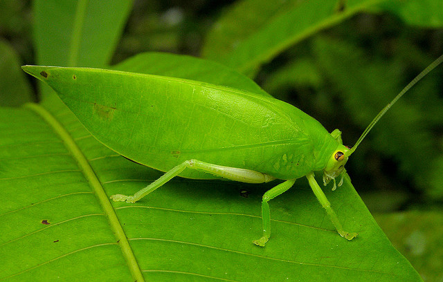

Кузнечик

Кузнечики — обширная группа насекомых, насчитывающая свыше 6800 видов. Кузнечики составляют 3 семейства в отряде Прямокрылых и являются родственниками сверчков и саранчи. Некоторые кузнечики похожи на цикад и богомолов, но с этими насекомыми у них родственных связей нет. В большинстве своем кузнечики насекомые среднего размера (2-4 см в длину), ряд тропических видов гораздо крупнее (до 10 см в длину). Тело у кузнечиков продолговатое, голова овальная с такой же формы глазами. Конечности длинные (особенно задние) прыгательного типа с очень длинными бедрами и голенями. У шлемоносного и шипоголового кузнечиков конечности, голова и надкрылья усеяны острыми шипиками, что придает им весьма грозный вид. В отличие от других прямокрылых, у которых антенны короче тела, у кузнечиков длина антенн (усиков) как минимум равна длине тела, а у некоторых видов может превышать ее в 4 раза! В большинстве своем кузнечики насекомые среднего размера (2-4 см в длину), ряд тропических видов гораздо крупнее (до 10 см в длину). Тело у кузнечиков продолговатое, голова овальная с такой же формы глазами. Конечности длинные (особенно задние) прыгательного типа с очень длинными бедрами и голенями. У шлемоносного и шипоголового кузнечиков конечности, голова и надкрылья усеяны острыми шипиками, что придает им весьма грозный вид. В отличие от других прямокрылых, у которых антенны короче тела, у кузнечиков длина антенн (усиков) как минимум равна длине тела, а у некоторых видов может превышать ее в 4 раза! Некоторые кузнечики притворяются подпорченными листочками, их тело усеяно точечками и пятнами, имитирующими гниль и болезни растений. У некоторых видов края надкрыльев неровные и ассиметрично укорочены, что создает впечатление оторванных листьев или просто их кусочков.